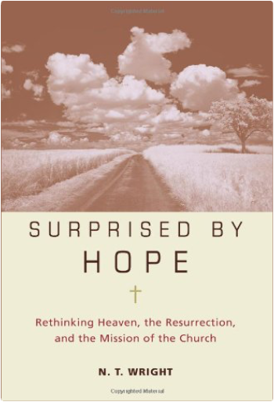

Empire As A Way of Life: An Essay on the Causes and Character of America's Present Predicament Along with a Few Thoughts about an AlternativeWilliam Appleman Williams “An unblinkered look at our imperial past . . . a perceptive work by one of our most perceptive historians.”—Studs Terkel
A work of remarkable prescience, Empire As A Way of Life is influential historian William Appleman Williams’s groundbreaking work highlighting imperialism—“empire as a way of life”—as the dominant theme in American history. Analyzing U.S. history from its revolutionary origins to the dawn of the Reagan era, Williams shows how America has always been addicted to empire in its foreign and domestic ideology. Detailing the imperial actions and beliefs of revered figures such as Benjamin Franklin, Thomas Jefferson, Abraham Lincoln and Franklin Delano Roosevelt, this book is the most in-depth historical study of the American obsession with empire, and is essential to understanding the origins of our current foreign and domestic undertakings.
Back in print for the first time in twenty-five years, this new edition features an introduction by Andrew Bacevich, author of The New American Militarism: How Americans Are Seduced by War and American Empire: The Realities and Consequences of U.S. Diplomacy. Lyrical BalladsWilliam Wordsworth, Samuel Taylor Coleridge, Nicholas Roe When it was first published, Lyrical Ballads enraged the critics of the day: Wordsworth and Coleridge had given poetry a voice, one decidedly different to that which had been voiced before. This acclaimed Routledge Classics edition offers the reader the opportunity to study the poems in their original contexts as they appeared to Coleridge’s and Wordsworth’s contemporaries, and includes some of their most famous poems, including Coleridge’s Rime of the Ancyent Marinere.  Surprised by Hope: Rethinking Heaven, the Resurrection, and the Mission of the ChurchN. T. Wright In Surprised by Hope: Rethinking Heaven, the Resurrection, and the Mission of the Church, top-selling author and Anglican bishop, N.T. Wright tackles the biblical question of what happens after we die and shows how most Christians get it wrong. We do not “go to” heaven; we are resurrected and heaven comes down to earth—a difference that makes all of the difference to how we live on earth. Following N.T. Wright’s resonant exploration of a life of faith in Simply Christian, the award-winning author whom Newsweek calls “the world’s leading New Testament scholar” takes on one of life’s most controversial topics, a matter of life, death, spirituality, and survival for everyone living in the world today. Jesus of Nazareth: From the Baptism in the Jordan to the TransfigurationPope Benedict XVI “This book is… my personal search ‘for the face of the Lord.’” —Benedict XVI
In this bold, momentous work, the pope—in his first book written as Benedict XVI—seeks to salvage the person of Jesus from recent “popular” depictions and to restore Jesus’ true identity as discovered in the Gospels. Through his brilliance as a theologian and his personal conviction as a believer, the pope shares a rich, compelling, flesh-and-blood portrait of Jesus and incites us to encounter, face-to-face, the central figure of the Christian faith.
From Jesus of Nazareth… “the great question that will be with us throughout this entire book: But what has Jesus really brought, then, if he has not brought world peace, universal prosperity, and a better world? What has he brought? The answer is very simple: God. He has brought God! He has brought the God who once gradually unveiled his countenance first to Abraham, then to Moses and the prophets, and then in the wisdom literature—the God who showed his face only in Israel, even though he was also honored among the pagans in various shadowy guises. It is this God, the God of Abraham, of Isaac, and of Jacob, the true God, whom he has brought to the peoples of the earth. He has brought God, and now we know his face, now we can call upon him. Now we know the path that we human beings have to take in this world. Jesus has brought God and with God the truth about where we are going and where we come from: faith, hope, and love.” The Collected Stories of Richard YatesRichard Yates The literary event of 2001 is now the paperback event of 2002: The Collected Stories of Richard Yates gathers the late author's powerful and peerless short fiction in one comprehensive volume. Praised by such authors as Michael Chabon, Stewart O'Nan, Robert Stone, and Richard Russo, and universally acclaimed in reviews across the country, The Collected Stories is the crowning jewel in what has been the rediscovery of one of our greatest American writers. Bring Him to Me: The Frank Majewski StorySally Ann Zito By the time Frank Majewski (pronounced Ma-jes-kee) is twelve years old he has all the makings of a juvenile delinquent. Arrested multiple times, he spends much of his junior high school years behind bars.
Then, in 1969, eighteen-year-old Frank is introduced to Jesus Christ and begins a new life. He shares his faith with everyone he meets: drug addicts, bikers, hippies. Soon Frank is preaching to crowds of young people and becomes one of Detroit’s most powerful evangelists.
Books written on revivals often give the 1970s Jesus Movement a historical “nod.” Bring Him to Me goes a step further by transporting readers back in time through a fast-paced, true story of redemption. Following Frank on his journey to renewal, readers will:
- Witness the gospel’s ability to reach across age, gender, and cultural barriers
- Experience renewed hope in the power of the Holy Spirit to change lives
- Recognize that in God’s eyes there’s no such thing as a “lost cause” |

 Made with Delicious Library
Made with Delicious Library